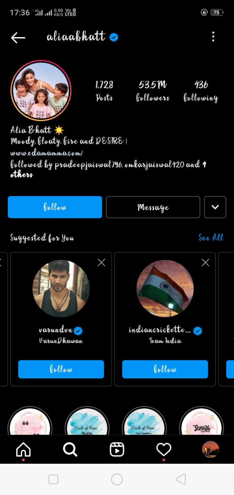

Step 1: First open your instagram account then go to the search bar and search a famouse personality or public figure . on other hand search persion with blue tick . you will see it will suggest more blue tick profiles . follow them . after few second you will see your follower will start to increase after one hour unfollow them again. Note that dont follow more than 100 account within hour. use this trick daily
